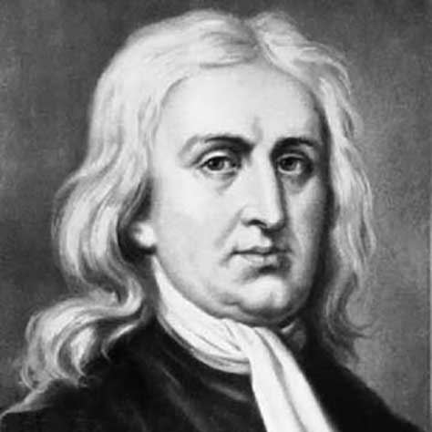
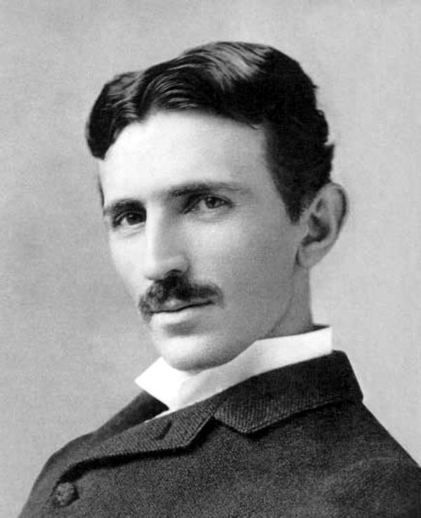
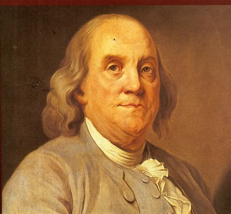
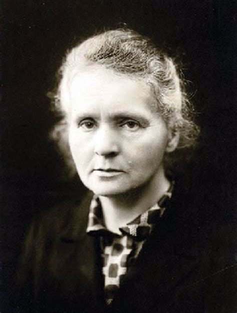

Isaac Newton was an English scientist and mathematician, who discovered gravitation and Newtonian Mechanics. Read this biography to find more on his life.
Isaac Newton Biography
Isaac Newton was an English scientist and mathematician, who discovered gravitation and Newtonian Mechanics. Read this biography to find more on his life.

Nikola Tesla was a Serbian-American inventor, best known for his development of alternating current electrical systems. This biography of Nikola Tesla provides detailed information about his childhood, life, achievements, works & timeline.
Nicola Tesla Biography
Nikola Tesla was a Serbian-American inventor, best known for his development of alternating current electrical systems. This biography of Nikola Tesla provides detailed information about his childhood, life, achievements, works & timeline.

One of the founding fathers of the USA, Benjamin Franklin was a multi-talented personality. He was a scientist, inventor, author, musician and a statesman. Check out this biography for detailed information on his life.
Benjamin Franklin Biography
One of the founding fathers of the USA, Benjamin Franklin was a multi-talented personality. He was a scientist, inventor, author, musician and a statesman. Check out this biography for detailed information on his life.
Leonardo Fibonacci Biography
Leonardo Fibonacci was a 13th century Italian mathematician. This biography of Leonardo Fibonacci provides detailed information about his childhood, life, achievements, works & timeline.

Marie Curie was a Physicist and Chemist, who was world renowned for her work on radioactivity. She also was the winner of two Nobel Prize. Read this biography to get info about her life and profile
Marie Curie Biography
Marie Curie was a Physicist and Chemist, who was world renowned for her work on radioactivity. She also was the winner of two Nobel Prize. Read this biography to get info about her life and profile

Bill Gates Biography
Bill Gates is the co-founder of Microsoft and currently the richest man in the world. This biography of Bill Gates provides detailed information about his childhood, life, achievements, works & timeline.